Weekly Management Station Schedule
In the case of a weekly schedule, specify the Active or Inactive values only once. These values are applicable for the entire week and for the complete duration of the schedule.
You create a weekly schedule from the Sub-Type drop-down list in the Setup tab. The last state of the day will be retained post-midnight until the next day schedule entry is triggered.
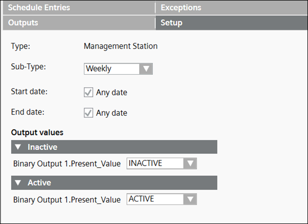
Example 1: Active Value: ON, Inactive Value: OFF:
Time period for the schedule (Active : 12:00 a.m., Inactive : 9:00 a.m., Active : 6:00 p.m.)
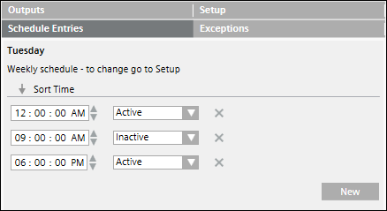
In this example, the Active status of the schedule set at 6 p.m. continues till 9 a.m. the next day.
There is no change of value at midnight because the active status continues as it finds the same active entry at 12.00 a.m. midnight.
However, in order for the midnight effect to continue, you must ensure either of the following:
- The Start date and End date of the schedule in the Setup tab must be set to Any date.
- If you want the midnight effect to happen on a particular day, then the end date of the schedule must be greater than 8 to 10 days from that day. For example, if you want the midnight effect on Monday, 29th June, then you must ensure that the end date of the schedule must be after 8 to 10 days, such as 9th or 10th July.
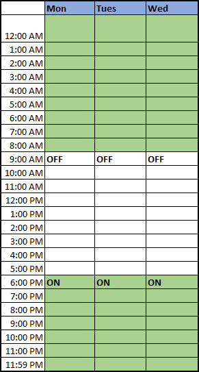
Example 2: Active Value: ON, Inactive Value: OFF:
Time period for the schedule (Active: 9:00 a.m., Inactive: 6:00 p.m.)
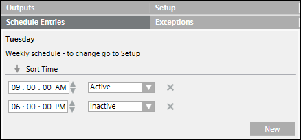
In this example, the Inactive status of the schedule set at 6 p.m. continues till 9 a.m. the next day. There is no change of value at midnight.
This is because the Inactive status continues as it does not find an Active entry at 12.00 a.m. midnight.
If there is no entry post-midnight, then it is by default considered as an Inactive state. However, if the Inactive state is to be discontinued then an Active entry is to be added at midnight.
In case of night shifts, it is recommended that you create a weekly schedule.
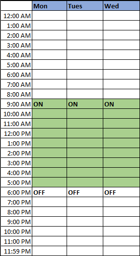
Example 3: Active Value: ON, Inactive Value: OFF:
Time period for the schedule (Active: 6:00 p.m. to 11.59 p.m. on Monday and 12.00 a.m. to 9.00 a.m. on Tuesday).
In this case, if you manually trigger the state of the point to OFF at 10 p.m. on Monday, the schedule shall remain OFF till 11.59 p.m. and shall be triggered back to Active (ON) at 12.00 a.m. on Tuesday.
However, in order for the midnight effect to continue, you must ensure either of the following:
- The Start date and End date of the schedule in the Setup tab must be set to Any date.
- If you want the midnight effect to happen on a particular day, then the end date of the schedule must be greater than 8 to 10 days from that day. For example, if you want the midnight effect on Monday, 29th June, then you must ensure that the end date of the schedule must be after 8 to 10 days, such as 9th or 10th July.
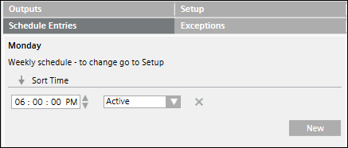
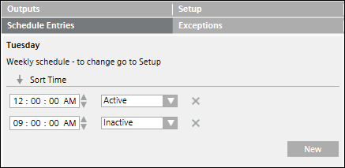
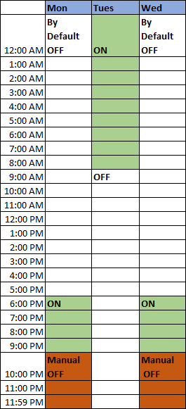
Example 4: Active Value: ON, Inactive Value: OFF:
Time period for the schedule (Inactive: 6:00 p.m. to 11.59 p.m. on Monday and 12.00 a.m. to 8.59 a.m. on Tuesday, Active: 9:00 a.m. to 5.59 p.m. on Tuesday).
In this case, if you manually trigger the state of the point to ON at 10.00 p.m. on Monday, then the schedule shall remain ON till 11.59 p.m. on Monday.
If there is no entry post-midnight, then it is by default considered as an Inactive state. However, if the Inactive state is to be discontinued then an Active entry is to be added at midnight.
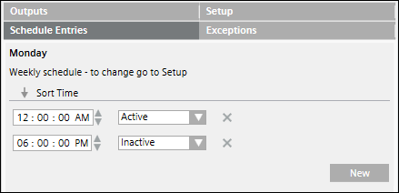
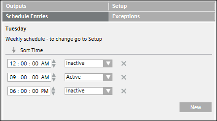
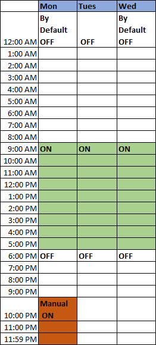